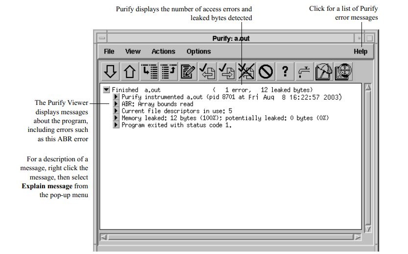
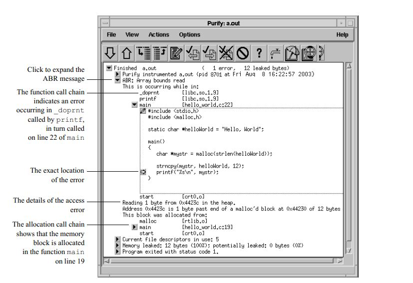
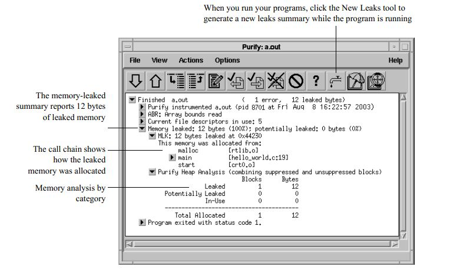

Purify使用指南
Table of Contents
1 简介
Purify是IBM开发的，用于定位C、C++代码中bug和内存泄漏位置的自动化工具。
Purify的特点有：
- Purify会检查程序运行时用到的所有代码，包括程序本身的代码，操作系统提供的代码和第三方库的代码。
- Purify支持对多进程和对线程的程序进行检测。
- Purify支持windows，linux和UNIX平台。
2 安装
2.1 安装license
- 运行脚本license_setup
[cnaps2]:/home/cnaps2/PurifyPlus.7.0.1.0-006>./license_setup
- 按回车继续
------------------------------------------------------------------------------ License Setup IBM Corporation Version: 2.198 ------------------------------------------------------------------------------ Using License Setup You are running the license_setup command as cnaps2. Output from license_setup will be copied to a log file. When you exit license_setup or license_setup completes, the location of the log file is displayed. The -help option can be used to display license_setup command line options. All of your inputs will be saved for future runs of license_setup. You can enter a q, q! or ? at any prompt: q Will save your inputs and quit license_setup. q! Quit license_setup without saving your inputs. Note that the 'Rational' directory is always saved. ? Get help on the current prompt. Press the Enter key to continue, q to quit license_setup: - 按回车继续
Rational PurifyPlus for Linux and UNIX - Enter Install Location Enter the location to install IBM Rational products. This will be referred to as the 'Rational' directory. In 'Rational' directory, license_setup will create a releases directory to keep all of the products by name and version. For example, in 'Rational'/releases, this install will create a 'PurifyPlus.7.0.1.0-006' directory to install Rational PurifyPlus for Linux and UNIX 7.0.1.0-006. The 'Rational' directory must be accessible from every machine where you plan to run these IBM Rational products. The 'Rational' directory path must be identical on each machine. Thus, an automount path like /tmp_mnt/rational should not be used because you cannot access this directory from every machine. Checking for 'Rational' directories.. None found. Press the Enter key to continue, q to quit license_setup: - 输入安装将要安装Purify的目录
Rational PurifyPlus for Linux and UNIX - Enter Install Location Enter the location to install IBM Rational products. This will be referred to as the 'Rational' directory. In 'Rational' directory, license_setup will create a releases directory to keep all of the products by name and version. For example, in 'Rational'/releases, this install will create a 'PurifyPlus.7.0.1.0-006' directory to install Rational PurifyPlus for Linux and UNIX 7.0.1.0-006. The 'Rational' directory must be accessible from every machine where you plan to run these IBM Rational products. The 'Rational' directory path must be identical on each machine. Thus, an automount path like /tmp_mnt/rational should not be used because you cannot access this directory from every machine. Checking for 'Rational' directories.. None found. Press the Enter key to continue, q to quit license_setup: Enter 'Rational' directory: /home/cnaps2 - 按1接收许可协议
Initializing AIX JRE to display license agreement... Done. Please ignore the messages related to 'Could not lock System prefs.' It is a known issue with the JRE on AIX. Running LAP Tool: /home/cnaps2/releases/jre142.aix/jre/bin/java -classpath extras/LAP/lib/lapapp.jar:extras/LAP/lib/i18n.jar:/home/cnaps2/sqllib/java/db2java.zip:/home/cnaps2/sqllib/java/sqlj.zip:/home/cnaps2/sqllib/function:/home/cnaps2/sqllib/java/db2jcc_license_cu.jar:/home/cnaps2/sqllib/tools/clpplus.jar:/home/cnaps2/sqllib/tools/antlr-3.2.jar:/home/cnaps2/sqllib/tools/jline-0.9.93.jar:/home/cnaps2/sqllib/java/db2jcc.jar:. com.ibm.lex.lapapp.LAP -l extras/LAP/LA_files -text_only -s /home/cnaps2/releases/PurifyPlus.7.0.1.0-006 ------------------------------------------------------------------------------ 重要信息：请仔细阅读 下面提供了两个许可协议。 1. 评估程序的国际许可协议 2. 国际程序许可协议 如果被许可方为了生产性使用目的（而不是为了评估、测试、试用“先试后 买”或演示）获得本程序，单击下面的“接受”按钮即表示被许可方接受 国际程序许可协议，且不作任何修改。 如果被许可方为了评估、测试、试用“先试后买”或演示（统称为“评 估”）目的获得本程序：单击下面的“接受”按钮即表示被许可方同时接受 （i）评估程序的国际许可协议（“评估许可”），且不作任何修改；和 （ii）国际程序许可协议（“IPLA”），且不作任何修改。 按 Enter 键继续查看本许可协议或按 "1" 接受本协议，按 "2" 拒绝本协议，按 "3" 打印本协议，按 "5" 用英语查 看，或按 "99" 回到上一屏幕。 1 - 按1选择Rational PurifyPlus for Linux and UNIX
cnaps2 accepts the license agreement on 公元2014年07月31日 星期四 17时25分22秒. ------------------------------------------------------------------------------ Rational PurifyPlus for Linux and UNIX Product and License Configuration Selection Menu Make a selection that best describes your desired license set up. Enter option 1 if you are doing license set up for: Rational PurifyPlus for Linux and UNIX Enter option 2 if you are doing license set up for: Rational Purify/Quantify/PureCoverage You can only select one item from the list. These products require FLEXlm licensing. Enter option 'e' to see the specific FLEXlm licenses for each product. PurifyPlus or Individual License Configuration: 1) Rational PurifyPlus for Linux and UNIX 2) Rational Purify/Quantify/PureCoverage Individual Licensing 3) License setup only - IBM Rational products e) Explain what licenses are needed for each product. d) Download the latest version of the license_setup command from ftp.software.ibm.com and run it. b) Back to the previous menu. q) Quit license_setup. Enter q! to quit without saving your inputs. ?) Help. Enter option: [e] 1 - 按2选择设置license文件
Enter option: [e] 1 Installing: FLEXlm 11.8 for Solaris SPARC... from: /home/cnaps2/PurifyPlus.7.0.1.0-006/extras/flexlm.sol to: /home/cnaps2/base/cots/flexlm.11.8/sun4_solaris2 Installing: FLEXlm 11.8 for Solaris x64... from: /home/cnaps2/PurifyPlus.7.0.1.0-006/extras/flexlm.solaris_x64 to: /home/cnaps2/base/cots/flexlm.11.8/solaris_x64 Installing: FLEXlm 11.8 for AIX... from: /home/cnaps2/PurifyPlus.7.0.1.0-006/extras/flexlm.aix to: /home/cnaps2/base/cots/flexlm.11.8/rs6k_aix Installing: FLEXlm 11.8 for Linux... from: /home/cnaps2/PurifyPlus.7.0.1.0-006/extras/flexlm.i386_linux2 to: /home/cnaps2/base/cots/flexlm.11.8/i386_linux2 ------------------------------------------------------------------------------ PurifyPlus - Licensing Options Menu Select one of the following 2 licensing options. 1) Use an existing IBM Rational license file (permanent or temporary) or license server for PurifyPlus 7.0.1.0-006. 2) Set up a license server using a permanent or term-license-agreement (TLA) license. You need a .upd license file to import into license_setup. b) Back to the previous menu. e) Explain the licensing options in more detail. q) Quit license_setup. Enter q! to quit without saving your inputs. Enter license option: [e] 2 - 输入license文件的路径
------------------------------------------------------------------------------ PurifyPlus - Import Licenses The import file you specify should be from a file you saved from an e-mail message you received from IBM. This is not the license file license_setup will set up. It is the license information this program will import to make decisions about what product(s) you have licensed and how the licenses should be set up with as a FLEXlm license server. The file is called something like license_for_server.upd. The file must contain FLEXlm SERVER and INCREMENT lines for PurifyPlus. Currently, license_setup cannot import a redundant server license file. If you do not have a .upd file to import licenses from, enter none. File to import from: [none] /home/cnaps2/PurifyPlus.7.0.1.0-006/IBM.Rational.PurifyPlus.v7.1.lic.eval.upd - 选择1检查license文件
PurifyPlus - License Check Menu ---> 1) Check license keys in: /home/cnaps2/PurifyPlus.7.0.1.0-006/IBM.Rational.PurifyPlus.v7.1.lic.eval.upd Will check for these licenses: License Feature Description PurifyPlusUNIX Rational PurifyPlus for UNIX DevelopmentStudioUNIX Rational Suite DevelopmentStudio for UNIX DevelopmentStudioUNIXRT Rational Suite DevelopmentStudio RealTime for UNIX purecov Rational PureCoverage for UNIX purify Rational Purify for UNIX quantify Rational Quantify for UNIX The license server is not needed for uncounted licenses: 2) No need to start or restart the license server. 3) No need to check license server using lmstat--licenses are uncounted. 4) License settings for PurifyPlus up-to-date. b) Back to the previous menu. q) Quit license_setup. Enter q! to quit without saving your inputs. ?) Help. Enter menu option: [1] - license文件检查通过后按回车继续
Will check for these specific licenses: License Feature Description PurifyPlusUNIX Rational PurifyPlus for UNIX DevelopmentStudioUNIX Rational Suite DevelopmentStudio for UNIX DevelopmentStudioUNIXRT Rational Suite DevelopmentStudio RealTime for UNIX purecov Rational PureCoverage for UNIX purify Rational Purify for UNIX quantify Rational Quantify for UNIX Searching for 'ibmratl' specific license keys in: /home/cnaps2/PurifyPlus.7.0.1.0-006/IBM.Rational.PurifyPlus.v7.1.lic.eval.upd No ibmratl specific licenses found. Searching for 'rational' specific license keys... One rational specific license found. All 'rational' license keys are okay in: /home/cnaps2/PurifyPlus.7.0.1.0-006/IBM.Rational.PurifyPlus.v7.1.lic.eval.upd Searching for 'telelogic' specific license keys... No telelogic specific licenses found. Press the Enter key to continue, q to quit license_setup: - 按q退出,自此license安装完毕
PurifyPlus - License Check Menu 1) Check license keys in: /home/cnaps2/PurifyPlus.7.0.1.0-006/IBM.Rational.PurifyPlus.v7.1.lic.eval.upd The license server is not needed for uncounted licenses: 2) No need to start or restart the license server. 3) No need to check license server using lmstat--licenses are uncounted. 4) License settings for PurifyPlus up-to-date. b) Back to the previous menu. ---> q) Quit license_setup. Enter q! to quit without saving your inputs. ?) Help. Enter menu option: [q]
2.2 安装Purify
- 运行rs_install
[cnaps2]:/home/cnaps2/PurifyPlus.7.0.1.0-006>./rs_install ------------------------------------------------------------------------------ RS Install IBM Corporation Version: 2.198 ------------------------------------------------------------------------------ Using RS Install You are running the rs_install command as cnaps2. Output from rs_install will be copied to a log file. When you exit rs_install or rs_install completes, the location of the log file is displayed. The -help option can be used to display rs_install command line options. All of your inputs will be saved for future runs of rs_install. You can enter a q, q! or ? at any prompt: q Will save your inputs and quit rs_install. q! Quit rs_install without saving your inputs. Note that the 'Rational' directory is always saved. ? Get help on the current prompt. Press the Enter key to continue, q to quit rs_install: - 按回车继续
------------------------------------------------------------------------------ Rational PurifyPlus for Linux and UNIX - Enter Install Location Enter the location to install IBM Rational products. This will be referred to as the 'Rational' directory. In 'Rational' directory, rs_install will create a releases directory to keep all of the products by name and version. For example, in 'Rational'/releases, this install will create a 'PurifyPlus.7.0.1.0-006' directory to install Rational PurifyPlus for Linux and UNIX 7.0.1.0-006. The 'Rational' directory must be accessible from every machine where you plan to run these IBM Rational products. The 'Rational' directory path must be identical on each machine. Thus, an automount path like /tmp_mnt/rational should not be used because you cannot access this directory from every machine. Checking for 'Rational' directories.. One found. Enter 'Rational' directory: [/home/cnaps2] - 输入安装目录
Enter 'Rational' directory: [/home/cnaps2] /home/cnaps2
- 选择1Rational PurifyPlus for Linux and UNIX
cnaps2 accepted the license agreement on 公元2014年07月31日 星期四 17时25分22秒. ------------------------------------------------------------------------------ Rational PurifyPlus for Linux and UNIX Product and License Configuration Selection Menu Make a selection that best describes your desired installation. Enter option 1 if you are installing and have a license for: Rational PurifyPlus for Linux and UNIX Enter option 2 if you are installing and have a license for: Rational Purify/Quantify/PureCoverage You can only select one item from the list. These products require FLEXlm licensing. Enter option 'e' to see the specific FLEXlm licenses for each product. PurifyPlus or Individual License Configuration: --> 1) Rational PurifyPlus for Linux and UNIX 2) Rational Purify/Quantify/PureCoverage Individual Licensing 3) License setup only - IBM Rational products e) Explain what licenses are needed for each product. d) Download the latest version of the rs_install command from ftp.software.ibm.com and run it. b) Back to the previous menu. q) Quit rs_install. Enter q! to quit without saving your inputs. ?) Help. Enter option: [1] 1 - 输入yes,表示使用之前选定的license文件
Installed: FLEXlm 11.8 for Solaris SPARC Installed: FLEXlm 11.8 for Solaris x64 Installed: FLEXlm 11.8 for AIX Installed: FLEXlm 11.8 for Linux Installed: FLEXlm 11.8 for Solaris SPARC Installed: FLEXlm 11.8 for Solaris x64 Installed: FLEXlm 11.8 for AIX Installed: FLEXlm 11.8 for Linux Checking if PurifyPlus license is configured: Rational PurifyPlus for UNIX yes: /home/cnaps2/PurifyPlus.7.0.1.0-006/IBM.Rational.PurifyPlus.v7.1.lic.eval.upd (Has product licenses) Found one license file: /home/cnaps2/PurifyPlus.7.0.1.0-006/IBM.Rational.PurifyPlus.v7.1.lic.eval.upd contains: License: PurifyPlusUNIX Evaluation key expires: 15-aug-2014 Would you like to configure PurifyPlus to use this license file? [yes] yes - 输入1,安装默认组件
PurifyPlus - Typical/Custom Install Preference Choose the install option you prefer: ---> 1) Typical Install recommended product components. 2) Custom Select specific product components to install. b) Back to the previous menu. f) Forward to install and post-install PurifyPlus now. q) Quit rs_install. Enter q! to quit without saving your inputs. ?) Help. Enter install preference: [1] - 选择f,表示确定
------------------------------------------------------------------------------ PurifyPlus - Typical/Custom Install Preference Choose the install option you prefer: 1) Typical Install recommended product components. 2) Custom Select specific product components to install. You have chosen to do a typical install. b) Back to the previous menu. ---> f) Forward to install and post-install PurifyPlus now. q) Quit rs_install. Enter q! to quit without saving your inputs. ?) Help. Enter install preference: [f] - Purify会自动检测操作系统,并安装相应版本的程序
------------------------------------------------------------------------------ Documentation Table The docs/ directory on the release media contains the on-line documentation for the product. This may include the installation guide, release note, getting started docs or on-line help. Install? Size (KB) Product Documentation -------- --------- --------------------- 1) yes 14164 Documents in HTML. (Documentation) 2) yes 3756 Documents for Adobe Acrobat reader. (Documentation) 3) yes 1 Rs Help List (Documentation) -------- --------- --------------------- all 17921 Total (does not account for documents already installed.) Updating: /home/cnaps2/config/PurifyPlus_License_Map [rev 198] Rational PurifyPlus for UNIX ------------------------------------------------------------------------------ PurifyPlus - Product Table Use the custom install preference if you want to override the default install shown in this table. Install? Size (KB) PurifyPlus -------- --------- ---------- 1) yes 160058 + Purify for AIX 7.0.1.0-006 2) yes 118637 + PureCoverage for AIX 7.0.1.0-006 3) yes 105682 + Quantify for AIX 7.0.1.0-006 4) no -- ~ Purify for Solaris SPARC 7.0.1.0-006 5) no -- ~ PureCoverage for Solaris SPARC 7.0.1.0-006 6) no -- ~ Quantify for Solaris SPARC 7.0.1.0-006 7) no -- ~ Purify for Solaris x64 7.0.1.0-006 8) no -- ~ PureCoverage for Solaris x64 7.0.1.0-006 9) no -- ~ Quantify for Solaris x64 7.0.1.0-006 10) no -- ~ Purify for Linux 7.0.1.0-006 11) no -- ~ PureCoverage for Linux 7.0.1.0-006 12) no -- ~ Quantify for Linux 7.0.1.0-006 -------- --------- ---------- custom 384377 Total + This product is licensed. ~ Product platform mismatch. Installing: PurifyPlus 7.0.1.0-006... into: /home/cnaps2 size: 402298 KB (product with documentation) Installed: FLEXlm 11.8 for Solaris SPARC Installed: FLEXlm 11.8 for Solaris x64 Installed: FLEXlm 11.8 for AIX Installed: FLEXlm 11.8 for Linux Setting release area to be user and group writable: chmod -R u+w,g+w /home/cnaps2/releases/PurifyPlus.7.0.1.0-006 Installing: Rational PurifyPlus for Linux and UNIX 7.0.1.0-006 Install Data... from: /home/cnaps2/PurifyPlus.7.0.1.0-006/extras/install_data to: /home/cnaps2/releases/PurifyPlus.7.0.1.0-006/extras/install_data Installing: /home/cnaps2/config/uninstall [rev 94] Installing: /home/cnaps2/config/templates2.ini [rev 23] Installing: Rational PurifyPlus for Linux and UNIX 7.0.1.0-006 Tools... from: /home/cnaps2/PurifyPlus.7.0.1.0-006/extras/bin to: /home/cnaps2/releases/PurifyPlus.7.0.1.0-006/extras/bin Installing: Documents in HTML. (Documentation) from: /home/cnaps2/PurifyPlus.7.0.1.0-006/docs to: /home/cnaps2/releases/PurifyPlus.7.0.1.0-006/docs Installing: html... Installing: pdf... Installing: rs_help_list... Installing Purify for AIX 7.0.1.0-006 (160058 KB)... from: /home/cnaps2/PurifyPlus.7.0.1.0-006/products/purify/aix/7.0.1.0-006 to: /home/cnaps2/releases/purify.aix.7.0.1.0-006 Installing: purify.tar.gz file for AIX Installing PureCoverage for AIX 7.0.1.0-006 (118637 KB)... from: /home/cnaps2/PurifyPlus.7.0.1.0-006/products/purecov/aix/7.0.1.0-006 to: /home/cnaps2/releases/purecov.aix.7.0.1.0-006 Installing: purecov.tar.gz file for AIX Installing Quantify for AIX 7.0.1.0-006 (105682 KB)... from: /home/cnaps2/PurifyPlus.7.0.1.0-006/products/quantify/aix/7.0.1.0-006 to: /home/cnaps2/releases/quantify.aix.7.0.1.0-006 Installing: quantify.tar.gz file for AIX Not installing Purify for Solaris SPARC 7.0.1.0-006. Not installing PureCoverage for Solaris SPARC 7.0.1.0-006. Not installing Quantify for Solaris SPARC 7.0.1.0-006. Not installing Purify for Solaris x64 7.0.1.0-006. Not installing PureCoverage for Solaris x64 7.0.1.0-006. Not installing Quantify for Solaris x64 7.0.1.0-006. Not installing Purify for Linux 7.0.1.0-006. Not installing PureCoverage for Linux 7.0.1.0-006. Not installing Quantify for Linux 7.0.1.0-006. Installing: /home/cnaps2/config/make_bin_links.pplus [rev 1] Installing: /home/cnaps2/config/purifyplus_update_setup [rev 12] aix_64 Configuring Purify 7.0.1.0-006 131211 AIX in: /home/cnaps2/releases/purify.aix.7.0.1.0-006 ------------------------------------------------------------------------------ Purify Cache Directory Configuration ------------------------------------ To improve build-time performance, instrumented versions of libraries and object files are cached. A file is written to a global cache directory if the file's original directory is not writable. By default, the cache directory is created under the Purify install directory. You do not need to change this unless the install file system is not writable or does not have enough free space. Rational recommends 256000 KB be available, but requirements can vary significantly from installation to installation. The specified directory must already exist and be writable, or it must be possible for this program to create it. The directory name must be fully-qualified from /. Enter the Purify cache directory : [/home/cnaps2/releases/purify.aix.7.0.1.0-006/cache] ------------------------------------------------------------------------------ Purify Rational ClearQuest Integration Configuration ---------------------------------------------------- Purify supports an integration with Rational ClearQuest which allows you to file change requests on Purify detected errors from within the Purify GUI. If you have Rational ClearQuest installed, you can set up site-wide defaults for this integration. It is possible to configure some other system. You need to configure any other change request system manually. Refer to online help system for the steps to configure something other than ClearQuest (look for ClearQuest in the index). Set up Rational ClearQuest integration? [no] Running Purify self-test. This may take 1-2 minutes... Testing purify in /home/cnaps2/releases/purify.aix.7.0.1.0-006 Looking for compiler.. Testing 32-bit purify with dynamic linking using /usr/vac/bin/cc.. ld：0711-317 错误：未定义的符号：.purify_is_running ld：0711-345 使用 -bloadmap 或 -bnoquiet 选项获取详细信息。 *** Warning: Could not compile test program /home/cnaps2/releases/purify.aix.7.0.1.0-006/test/hello_world.c Please verify compiler installation and try again. Done Testing 64-bit purify with dynamic linking using /usr/vac/bin/cc.. Purify 7.0.1.0-006 131211 AIX (64-bit) (C) Copyright IBM Corporation 1992, 2013 All Rights Reserved. Instrumenting: test.pure.dynamic.64. libc.a,,,,,,,,,,,,,,,,,,,,,,,,,,,,,,,,,,,,,,,,,,,,,,,,,,,,,,,,,,,,,,,,,,,,,,,,,,,,,,,,,,,,,,,,,,,,,,,....... libcrypt.a,. Instrumented test.pure.dynamic.64 is test.pure.dynamic.64. Done. ............Done ---------------------------------------------------------------- | | Warning: 32-bit compiler problem (cc=/usr/vac/bin/cc). | Could not build the Purify 32-bit test program. | Purify built and ran the 64-bit test program correctly. | ---------------------------------------------------------------- !!! [Warning 1] Self-test 32-bit could not be run. Rational Purify for UNIX - Configuration Summary: ------------------------------------------------- License source: (status: PASSED) /home/cnaps2/PurifyPlus.7.0.1.0-006/IBM.Rational.PurifyPlus.v7.1.lic.eval.upd Installation location: /home/cnaps2/releases/purify.aix.7.0.1.0-006 Documentation location: UI/html -> /home/cnaps2/releases/PurifyPlus.7.0.1.0-006/docs/html/purify Cache location: /home/cnaps2/releases/purify.aix.7.0.1.0-006/cache Change Request Management command: <Not Set> Self-test: COULD-NOT-RUN (32-bit). PASSED (64-bit). Run by cnaps2 on 公元2014年07月31日 星期四 17时46分04秒 purify.configure completed: No errors, 1 warning (!!!). aix_64 Configuring PureCoverage 7.0.1.0-006 131211 AIX in: /home/cnaps2/releases/purecov.aix.7.0.1.0-006 ------------------------------------------------------------------------------ PureCoverage Cache Directory Configuration ------------------------------------------ To improve build-time performance, instrumented versions of libraries and object files are cached. A file is written to a global cache directory if the file's original directory is not writable. By default, the cache directory is created under the PureCoverage install directory. You do not need to change this unless the install file system is not writable or does not have enough free space. Rational recommends 256000 KB be available, but requirements can vary significantly from installation to installation. The specified directory must already exist and be writable, or it must be possible for this program to create it. The directory name must be fully-qualified from /. Enter the PureCoverage cache directory : [/home/cnaps2/releases/purecov.aix.7.0.1.0-006/cache] ------------------------------------------------------------------------------ PureCoverage Rational ClearQuest Integration Configuration ---------------------------------------------------------- PureCoverage supports an integration with Rational ClearQuest which allows you to file change requests on PureCoverage detected errors from within the PureCoverage GUI. If you have Rational ClearQuest installed, you can set up site-wide defaults for this integration. It is possible to configure some other system. You need to configure any other change request system manually. Refer to online help system for the steps to configure something other than ClearQuest (look for ClearQuest in the index). Set up Rational ClearQuest integration? [no] PureCoverage contains some scripts that are written in Perl. Note that only the perl executable is contained in this release and not the entire Perl distribution. For information on how to obtain and build the entire Perl distribution please read <purecov-home>/PERL/README.perl Running PureCoverage self-test. This may take 1-2 minutes... Testing purecov in /home/cnaps2/releases/purecov.aix.7.0.1.0-006 Looking for compiler.. Testing 32-bit purecov with dynamic linking using /usr/vac/bin/cc.. ld：0711-317 错误：未定义的符号：.purecov_is_running ld：0711-345 使用 -bloadmap 或 -bnoquiet 选项获取详细信息。 *** Warning: Could not compile test program /home/cnaps2/releases/purecov.aix.7.0.1.0-006/test/hello_world.c Please verify compiler installation and try again. Done Testing 64-bit purecov with dynamic linking using /usr/vac/bin/cc.. PureCoverage 7.0.1.0-006 131211 AIX (64-bit) (C) Copyright IBM Corporation 1992, 2013 All Rights Reserved. Instrumenting: test.pure.dynamic.64. libc.a,,,,,,,,,,,,,,,,,,,,,,,,,,,,,,,,,,,,,,,,,,,,,,,,,,,,,,,,,,,,,,,,,,,,,,,,,,,,,,,,,,,,,,,,,,,,,,,....... libcrypt.a,. Instrumented test.pure.dynamic.64 is test.pure.dynamic.64. Done. ............Done ---------------------------------------------------------------- | | Warning: 32-bit compiler problem (cc=/usr/vac/bin/cc). | Could not build the PureCoverage 32-bit test program. | PureCoverage built and ran the 64-bit test program correctly. | ---------------------------------------------------------------- !!! [Warning 2] Self-test 32-bit could not be run. Rational PureCoverage for UNIX - Configuration Summary: ------------------------------------------------------- License source: (status: PASSED) /home/cnaps2/PurifyPlus.7.0.1.0-006/IBM.Rational.PurifyPlus.v7.1.lic.eval.upd Installation location: /home/cnaps2/releases/purecov.aix.7.0.1.0-006 Documentation location: UI/html -> /home/cnaps2/releases/PurifyPlus.7.0.1.0-006/docs/html/purecov Cache location: /home/cnaps2/releases/purecov.aix.7.0.1.0-006/cache Change Request Management command: <Not Set> Self-test: COULD-NOT-RUN (32-bit). PASSED (64-bit). Run by cnaps2 on 公元2014年07月31日 星期四 17时46分06秒 purecov.configure completed: No errors, 1 warning (!!!). aix_64 Configuring Quantify 7.0.1.0-006 131211 AIX in: /home/cnaps2/releases/quantify.aix.7.0.1.0-006 ------------------------------------------------------------------------------ Quantify Cache Directory Configuration -------------------------------------- To improve build-time performance, instrumented versions of libraries and object files are cached. A file is written to a global cache directory if the file's original directory is not writable. By default, the cache directory is created under the Quantify install directory. You do not need to change this unless the install file system is not writable or does not have enough free space. Rational recommends 256000 KB be available, but requirements can vary significantly from installation to installation. The specified directory must already exist and be writable, or it must be possible for this program to create it. The directory name must be fully-qualified from /. Enter the Quantify cache directory : [/home/cnaps2/releases/quantify.aix.7.0.1.0-006/cache] Quantify contains some scripts that are written in Perl. Note that only the perl executable is contained in this release and not the entire Perl distribution. For information on how to obtain and build the entire Perl distribution please read <quantify-home>/PERL/README.perl Running Quantify self-test. This may take 1-2 minutes... Testing quantify in /home/cnaps2/releases/quantify.aix.7.0.1.0-006 Looking for compiler.. Testing 32-bit quantify with dynamic linking using /usr/vac/bin/cc.. ld：0711-317 错误：未定义的符号：.quantify_is_running ld：0711-345 使用 -bloadmap 或 -bnoquiet 选项获取详细信息。 *** Warning: Could not compile test program /home/cnaps2/releases/quantify.aix.7.0.1.0-006/test/hello_world.c Please verify compiler installation and try again. Done Testing 64-bit quantify with dynamic linking using /usr/vac/bin/cc.. Quantify 7.0.1.0-006 131211 AIX (64-bit) (C) Copyright IBM Corporation 1992, 2013 All Rights Reserved. Instrumenting: test.pure.dynamic.64. libc.a,,,,,,,,,,,,,,,,,,,,,,,,,,,,,,,,,,,,,,,,,,,,,,,,,,,,,,,,,,,,,,,,,,,,,,,,,,,,,,,,,,,,,,,,,,,,,,,....... libcrypt.a,. Instrumented test.pure.dynamic.64 is test.pure.dynamic.64. Done. ............Done ---------------------------------------------------------------- | | Warning: 32-bit compiler problem (cc=/usr/vac/bin/cc). | Could not build the Quantify 32-bit test program. | Quantify built and ran the 64-bit test program correctly. | ---------------------------------------------------------------- !!! [Warning 3] Self-test 32-bit could not be run. Rational Quantify for UNIX - Configuration Summary: --------------------------------------------------- License source: (status: PASSED) /home/cnaps2/PurifyPlus.7.0.1.0-006/IBM.Rational.PurifyPlus.v7.1.lic.eval.upd Installation location: /home/cnaps2/releases/quantify.aix.7.0.1.0-006 Documentation location: UI/html -> /home/cnaps2/releases/PurifyPlus.7.0.1.0-006/docs/html/quantify Cache location: /home/cnaps2/releases/quantify.aix.7.0.1.0-006/cache Self-test: COULD-NOT-RUN (32-bit). PASSED (64-bit). Run by cnaps2 on 公元2014年07月31日 星期四 17时46分12秒 quantify.configure completed: No errors, 1 warning (!!!). Creating the common bin directory for PurifyPlus 7.0.1.0-006/AIX: Creating links for: PurifyPlus Creating links for: FLEXlm Creating links for: Purify for AIX Creating links for: PureCoverage for AIX Creating links for: Quantify for AIX A common bin directory has been created with links to 35 commands: /home/cnaps2/releases/PurifyPlus.7.0.1.0-006/rs6k_aix/bin ^^^^^^^^^^^^^^^^^^^^^^^^^^^^^^^^^^^^^^^^^^^^^^^^^^^^^^^^^ Add this directory to your command search path in your shell startup file. Use these commands: To start these products: purify Purify for AIX 7.0.1.0-006 purecov PureCoverage for AIX 7.0.1.0-006 quantify Quantify for AIX 7.0.1.0-006 Creating/updating setup files in /home/cnaps2/releases/PurifyPlus.7.0.1.0-006... Created: purifyplus_setup.csh in PurifyPlus.7.0.1.0-006 Created: purifyplus_setup.sh in PurifyPlus.7.0.1.0-006 You can source the setup file to help you start the programs in this install. If you are installing this for users in addition to yourself you will want to have them add one of these commands to their login environment. Users of csh, tcsh and other csh-compatible shells do this: source /home/cnaps2/purifyplus_setup.csh Users of sh, ksh, bash and other bourne-compatible shells do this: . /home/cnaps2/purifyplus_setup.sh ------------------------------------------------------------------------------ The rs_install command completed successfully. Defaults saved in: /home/cnaps2/config/defaults/rs_install.PurifyPlus.7.0.1.0-006.cnaps2 rs_install log file: /home/cnaps2/releases/PurifyPlus.7.0.1.0-006/rs_install.L2601H8.cnaps2.log End of rs_install.
3 使用
3.1 查看帮助
- 使用web浏览器查看帮助文档
purify －onlinehelp
- 查看完整的在线帮助
菜单Help>Help topics
菜单Help>On window
菜单Help>On content
3.2 使用步骤 ATTACH
- 只要将purify放在普通的编译/链接命令前
purify cc -g hello.c
若编译和链接是分成不同的步骤分布进行的,则只需要将purify放在链接操作前即可.
cc -c -g hello.c purify cc -g hello.o
- 执行编译出来的程序.
程序会照常运行,并显示Purify Viewer窗口展示找到的BUG.

值得一提的是,Purify在找到BUG后并不会暂停程序的执行,程序的启动,运行,退出与原程序一般无疑.
3.4 定位BUG在源代码中的位置 ATTACH

NOTE: 若在编译时使用了-g选项,则Purify View会显示BUG所在的源文件,行号和涉及的变量名. 若没有带-g选项,则只能显示文件名和函数名.
3.5 查找泄漏的内存 ATTACH
当程序退出,Purify会查找泄漏的内存并给出未释放的内存报告.
Purify将内存分为三个状态,每个状态都会统计内存块的数量和大小.
- Leaked memory
没有指针指向这块内存
- Potentially Leaked memory
没有指针指向这块内存的头部,但是有指针指向这块内存的内部.
- Memory in use
有指针指向的内存块(不存在泄漏的情况)

NOTE: 若运行的是一个需要长期不退出的程序,可以在程序尚在运行时,通过单击菜单栏中的`New Leaks tool`按钮来产生内存泄漏的情况报告.

4 保存/载入结果
Purify可以将检测的结果保存到后缀为.pv的Purify View file中, 也可以从Purify View file中载入检测结果
4.1 保存结果
- 选择菜单`File>Save As`
- 输入保存的文件名,后缀名使用.pv,表示为Purify view file
4.2 载入结果
有两种方式载入结果文件
- 从View中选择菜单`File>Open`,打开Purify view file
- 在命令行运行:
purify -view filename.pv
5 API
Purify提供了一系列的API可以插入到源代码中提供更个性化的检测功能.
要使用Purify API,需要include `<purifyhome>/purify.h`并且链接库`<purifyhome/purify_stubs.a>`
| Commonly used API | functions Description |
|---|---|
| int purify_describe (char *addr) | Prints specific de tails about memory |
| int purify_is_running (void) | Returns "TRUE" if the program is instrumented |
| int purify_new_inuse (void) | Prints a message on all memory newly in use |
| int purify_new_leaks (void) | Prints a message on all new leaks |
| int purify_new_fds_inuse (void) | Lists the new open file descriptors |
| int purify_printf (char *format, …) | Prints formatted text to the Viewer or log-file |
| int purify_watch (char *addr) | Watches for memory write , malloc, free |
| int purify_watch_n (char *addr, int size, char *type) | Watches memory: type = " r", "w", "rw" |
| int purify_watch_info (void) | Lists active watchpoints |
| int purify_watch_remove (int watchno) | Removes a specified watchpoint |
| int purify_what_colors (char *addr, int size) | Prints the color coding of memory |
6 命令选项
6.1 Build-time options
在编译时使用build-time options. 例如
purify -cache-dir=$HOME/cache -always-use-cache-dir cc -o hello hello.c
| options | 说明 | 默认值 |
|---|---|---|
| -always-use-cache-dir | Forces all instrumented object files to be written to the global cache directory | no |
| -cache-dir | Specifies the global directory where Purify caches instrumented object files | <purifyhome>/cache |
| -ignore-runtime-environment | Prevents the runtime Purify environment from overriding the option values used in building the program | no |
| -linker | Sets the alternative linker to build the executables instead of the system default | system-dependent |
| -print-home-dir | Prints the name of the directory wher e Purify is installed, then exits |
6.2 Runtime options
Runtime options除了可以在使用purify时用带option的方式生效,还能通过写到环境变量`PURIFYOPTIONS`中生效.例如
setenv PURIFYOPTIONS "-log-file=mylog.%v.%p ‘printenv PURIFYOPTIONS‘"
| 选项 | 说明 | 默认值 |
|---|---|---|
| -auto-mount-prefix | Removes the prefix used by file system auto-mounters | /tmp_mnt |
| -chain-length | Sets the maximum number of stack frames to print in a report | 6 |
| -fds-in-use-at-exit | Specifies that the file descriptor in us e message be displaye d at program exit | yes |
| -follow-child-processes | Controls whether Purify monitors child processes in an instrumented program | no |
| -jit-debug | Enables just-in-time debugging | none |
| -leaks-at-exit | Reports all leaked memory at program exit | yes |
| -log-file | Writes Purify output to a log file instead of the Viewer window | stderr |
| -messages | Controls display of repeated messages: "first", "all" , or in a "batch" at program exit | first |
| -program-name | Specifies the full pathname of the instrumented program if argv[ 0] contains an undesirable or incorrect value | argv[ 0] |
| -show-directory | Shows the directory path for each file in the call chain, if the information is available | no |
| -show-pc | Shows the full pc value in each frame of the call chain | no |
| -show-pc-offset | Appends a pc-offset to each function name in the call chain | no |
| -view-file | Saves Purify output to a view file ( .pv ) instead of the Viewer . | none |
| -user-path | Specifies a list of directories in which to search for programs and source code | none |
| -windows | Redirects Purify output to stderr instead of the Viewer if -windows=no | none |